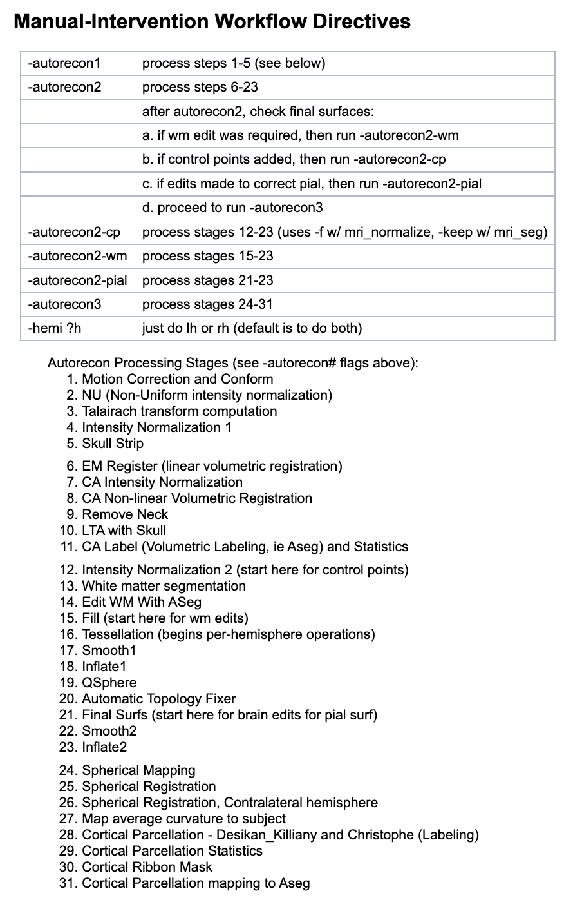

5.5 Surface & Electrodes
The surface & electrodes section is composed of two modules:
5.5.1 Surface & Registration
The Surface & Registration module has the goal of importing raw magnetic resonance (MR) and computerized tomography (CT) images into RAVE, so that they can be used in future analyses. There are two panels to note: Data settings and Command-line settings. Refer to the following screenshot for guidance.

Sample Surface & Registration Window
Data Settings:
Start by using the project and subject drop down menus to select the subject whose MRI and CT images that will be imported. Once again, using the blue “sync project & subject from [Import LFP] module” link at the bottom of the panel will automatically select the project and subject that was just being worked on.
Next, use the MRI drop down menu to select the raw MRI image for the selected subject. RAVE currently accepts two input types for MRI images:
- DICOM: submit a folder of DICOM files, representing a series of 2D brain slices (e.g. ______)
- Nifti: submit a single Nifti file representing the full 3D brain scan (e.g. subject_MRI.nii)
Note: Select the checkbox “Skip the FreeSurfer Reconstruction” if reconstructing the subject’s cortical surface model is not necessary. By default, this box will be checked.
Similarly, use the Raw CT DICOM folder drop down menu to select the raw CT image for the selected subject. Your input should be a DICOM folder ()
Note: Select the checkbox “Skip the CT Co-Registration” if it is not desired to align and overlay the subject’s CT scan with their MRI image. By default, this will be unchecked because aligning/overlaying this data allows for the accurate localization of electrodes.
For more information on these file formats, visit the Q&A at Surface & Registration.
Then, proceed to the command-line settings panel.
Command-line settings: The following steps will involve the computer’s command-line interface. (On Mac, this refers to the Terminal. On Windows, it refers to Command Prompt.)
Dcm2niix path: Dcm2niix is a library that is used to convert neuroimaging data from DICOM files to a Nifti file. Enter
FreeSurfer home (‘FREESURFER_HOME’, needed for surface reconstruction):
FSL home (‘FSLDIR’, needed for co-registration):
Now, click the blue “Check data and command-line tools” button. A pop-up will appear indicating the external commands that will be used based on what was entered for Dcm2niix path, FreeSurfer home, and FSL home above. Please also pay attention to any warnings that will be listed (e.g. if RAVE can not find FSL-flirt). When ready, hit “proceed”.
The following screen will appear, with four panels: Subject Information, Import DICOM Images, Surface Reconstruction, and Co-Registration CT to T1. Refer to the following screenshot for guidance.

Surface and Registration Screen 2
Subject Information: The project and subject whose MRI and CT data is currently being used will be displayed here. A task list will also be displayed. By default, three tasks will be listed: 1). Convert .dcm images to .nii, 2). Surface reconstruction, and 3). CT co-registration. If on the previous screen it was opted to skip FreeSurfer reconstruction or CT co-registration, those tasks won’t be listed. When a task is completed, the blue “x” will change to a green checkmark.
Import DICOM Images:
Begin here to convert DICOM images to the Nifti format using the dcm2niix external library.
Note: This script requires the Unix
shterminal in order to run commands read from the command-line interface. If using a Mac, this should already be provided. If using Windows, please install the Linux sub-system.
Specify the following configurations using a drop-down menu:
** Merge 2D slices from same series regardless of echo, exposure, etc:
** Crop 3D acquisition:
Based on these configurations, a series of commands will be automatically generated in the greyspace below. As mentioned earlier, it is recommended to copy these commands and run them on the computer’s command-line interface (e.g. Terminal). Select the “save & run by yourself” button to save the commands for manual use. However, to run these commands directly from RAVE, select the grey “Run from RAVE” button.
Note: The grey text represents comments. The purple texts are the actual commands that will be run by the computer.
- Surface Reconstruction:
This panel sets the specifications desired for the reconstruction of the subject’s cortical surface. It utilizes FreeSurfer, a package for the visualization and analysis of neuroimaging data.
Note: This script requires the Unix
bashterminal in order to run commands read from the command-line interface. If using a Mac, this should already be provided. If using Windows, please install the Linux sub-system.
Start by selecting the MRI File desired. Next, select the recon flag, which refers to which FreeSurfer steps are desired for the reconstruction of the brain model. Visit the FreeSurfer website to learn more about the seven choices. Use the drop-down menu on RAVE to select the recon flag that is fitting for the project. A screenshot has been included below for convenience:
 >Note: Most flags can take several hours for the computer to run. If the quickest flag is desired, select -autorecon1 in the drop-down menu; it encompasses minimal steps and so only takes 10 minutes to run.
Proceed to the “Remove existing work before running the command (if applicable)” checkbox. By default, this will be unchecked ______
Commands will be generated in the greyspace below. Once again, to run them manually, click the blue “Save & run by yourself” button. To have RAVE invoke system command, select the “Run from RAVE” button.
- Co-Registration CT to T1:
This panel will generate commands to align and overlay the subject’s MRI & CT images. FSL-flirt, a tool for registering these images, will be used.
Simply use the drop down menu to select the CT file. Commands will be available in the greyspace below. Once again, select the appropriate button based on whether the commands will be run manually or through RAVE.
Note: This script requires the Unix
bashterminal in order to run commands read from the command-line interface. If using a Mac, this should already be provided. If using Windows, please install the Linux sub-system.
At this point, the MRI and CT images should have been converted to the Nifti forrmat, and based on the selected configurations, the reconstruction of the subject’s brain model and co-registration of the MRI & CT images will or will not have been processed. Now, proceed to the electrode localization module to begin identifying electrodes!
5.5.2 Electrode Localization
RAVE’s electrode localization module features a built-in 3D viewer and allows for the quick and precise identification of where in the brain electrodes are located. The module is based on the CT image’s visualization of electrodes and the MRI’s visualization of brain structure.
When the electrode localization tab is selected, two panels will appear on the screen: Data Selection & Electrode Plan. Refer to the following screenshot for guidance.
 Data Selection:
Data Selection:
Begin in the data selection panel at left. Use the project and subject drop down menus to select the subject whose electrodes you wish to localize. You can once again use the “Sync from [Import LFP] module” to automatically select the project and subject you were just working on.
Next, use the drop down menu in choose CT to select the CT scan that was converted to the Nifti format and aligned to the MRI image in the previous module. It is alternatively possible to upload a CT image already in the Nifti format directly using the browse button.
If it is preferred not to localize with the CT image, select the checkbox “Do not localize with CT.” By default, this will be unchecked as _______.
Proceed to the Electrode Plan panel.
Electrode Plan:
This panel allows for the creation of groups for the subject’s electrodes.
For each group, specify the:
Label: the desired name for the group.
Dimension: the number of electrodes within the group.
Type: the type of exam the electrodes were used in Select from electroencephalogram (EEG), intracranial EEG (iEEG), stereotactic EEG (sEEG), ElectroCochleoGraphy (ECoG), or “other”.
Note that for each group, a summary will be displayed to indicate the individual electrode labels (e.g. G1 - G32), as well as total number of electrodes.
Scroll through the panel to review all electrode groups. Use the plus button in the bottom left corner of the panel to add a new group, or the minus button to delete the bottom-most group.
When the groups are ready, click the blue Load Subject button to proceed. If there are any errors, a pop-up will appear indicating the error and a recommended fix (e.g. “invalid CT file. Please specify or upload your own.”) If there are no errors, a “loading in progress” pop-up will appear indicating that the CT file and 3D viewer are being loaded.